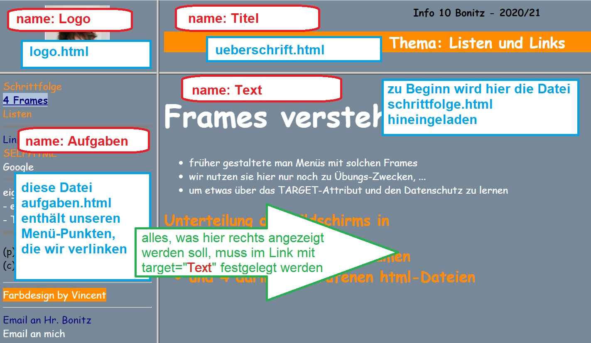
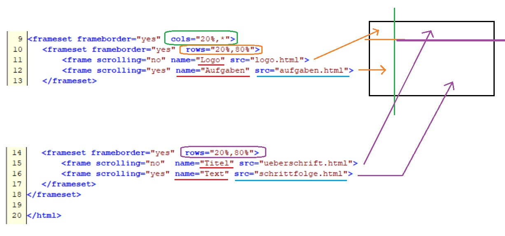

Frames verstehen
- früher gestaltete man Menüs mit solchen Frames
- wir nutzen sie hier nur noch zu Übungs-Zwecken, ...
- um etwas über das TARGET-Attribut und den Datenschutz zu lernen
Unser Bildschirm ist unterteilt in
- 4 Fenster mit 4 Fensternamen
- und 4 darin aufgerufenen html-Dateien
Hier die 4 Fenster, ihre Namen (rot) und die hineingeladenen Dateien (blau):

Festgelegt werden die frames mit ihren Namen gleich in der Startdatei index.html:

- die Unterteilung funktioniert wie bei Bilderrahmen von IKEA ...
- ... die man oft im Doppelpack kauft (nur dass wir hier html-Dateien anordnen
- 1. gedankliche Linie an der "Wand" mit dem frameset-TAG
- 2. erstes "Bild" erscheint oberhalb/links von der "Linie" mit dem frame-TAG
- das zweite "Bild" kommt unterhalb/rechts von der "Linie"
- 3. oder man unterteilt den Bereich - wie bei uns - noch mal mit frameset ...
- und ordnet erst danach die beiden "Bilder" an
- 4. Bei uns wird zunächst in 2 "Spalten" unterteilt ...
- ... und danach jede der Spalten in 2 "Zeilen"